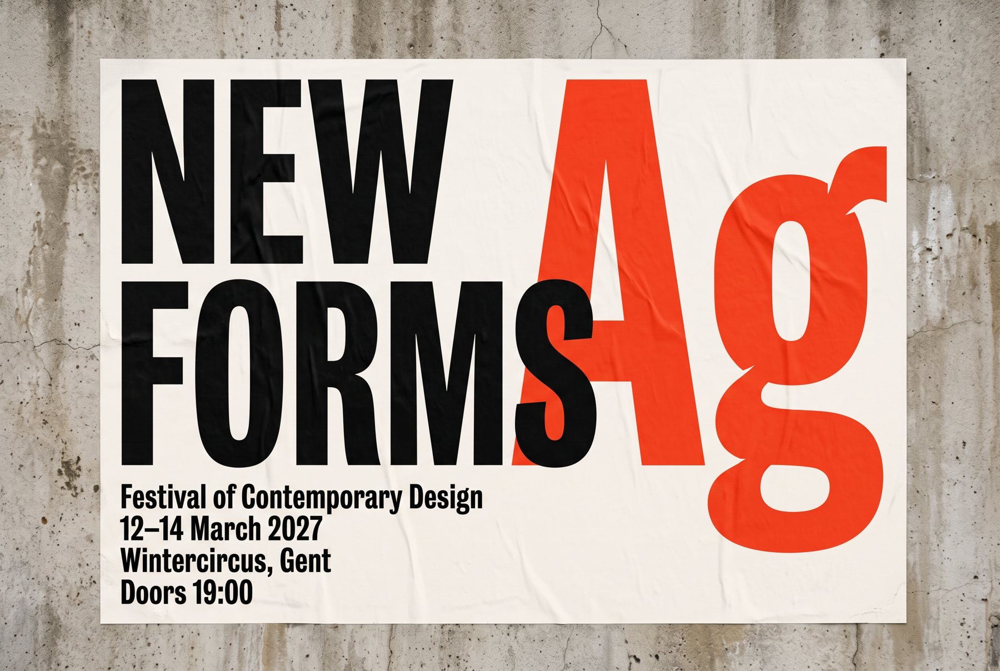
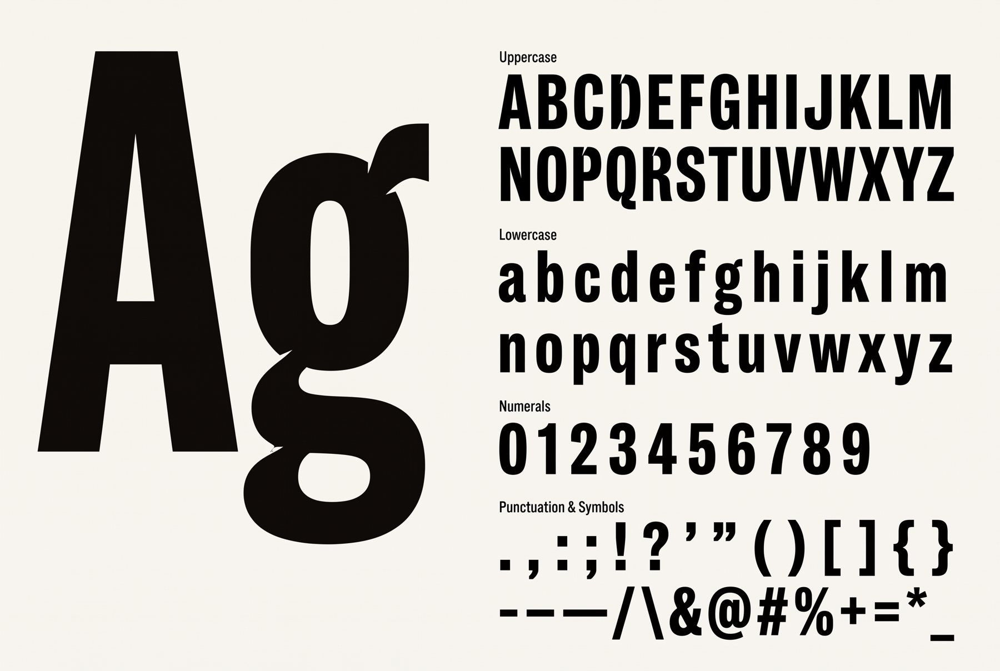
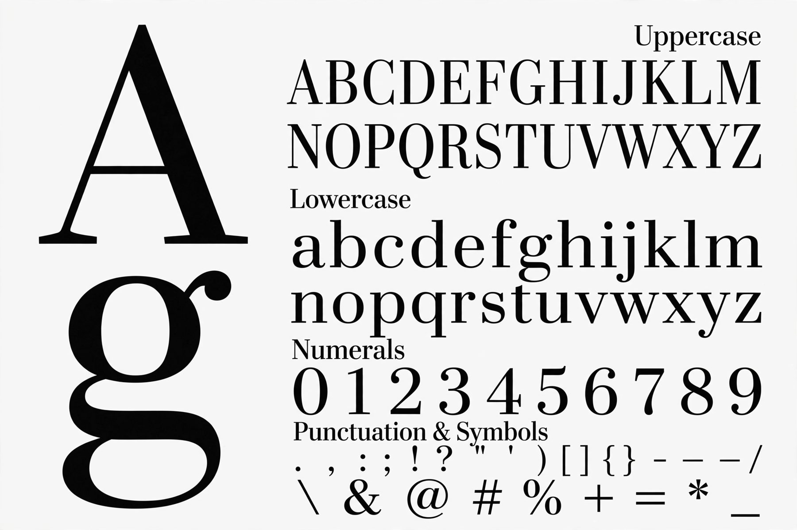
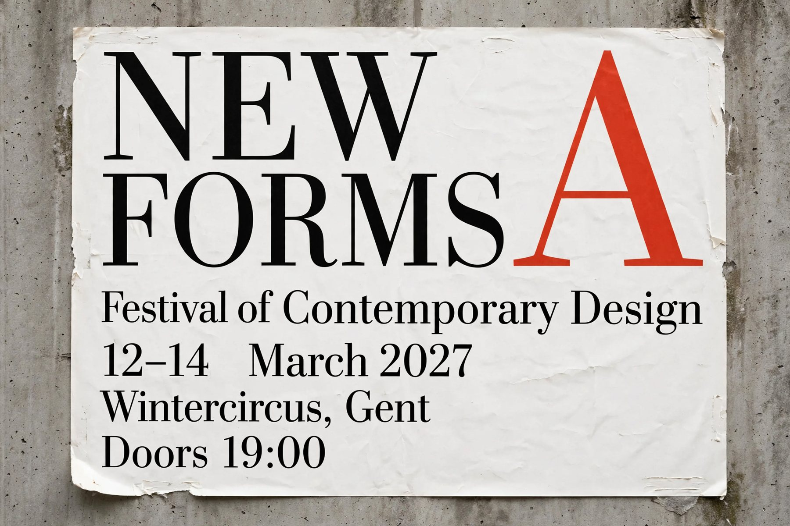
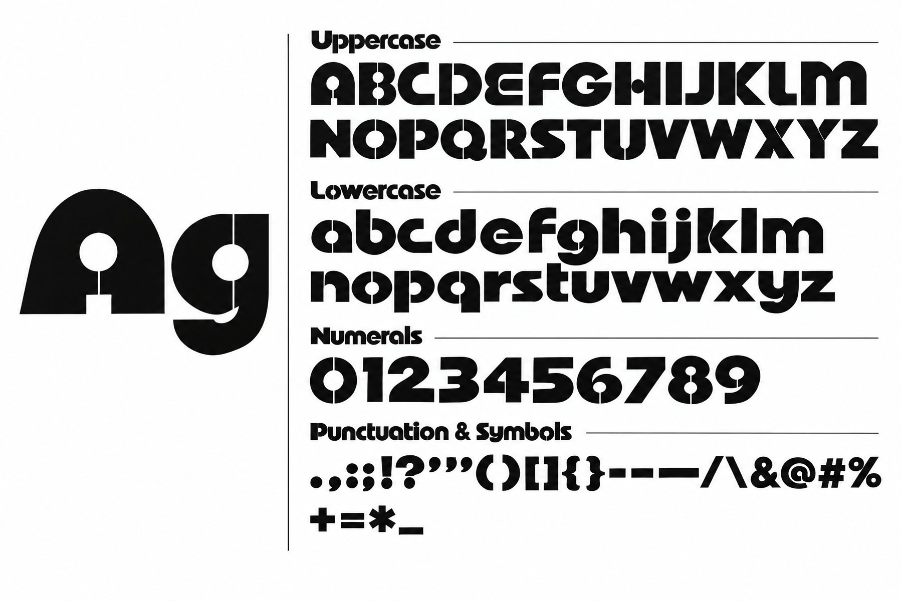
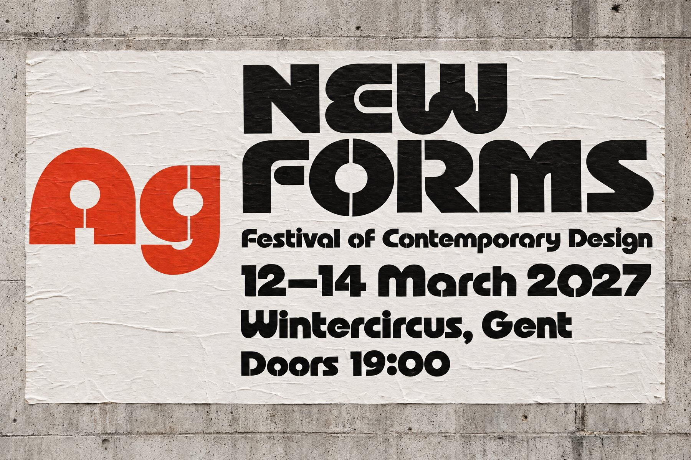
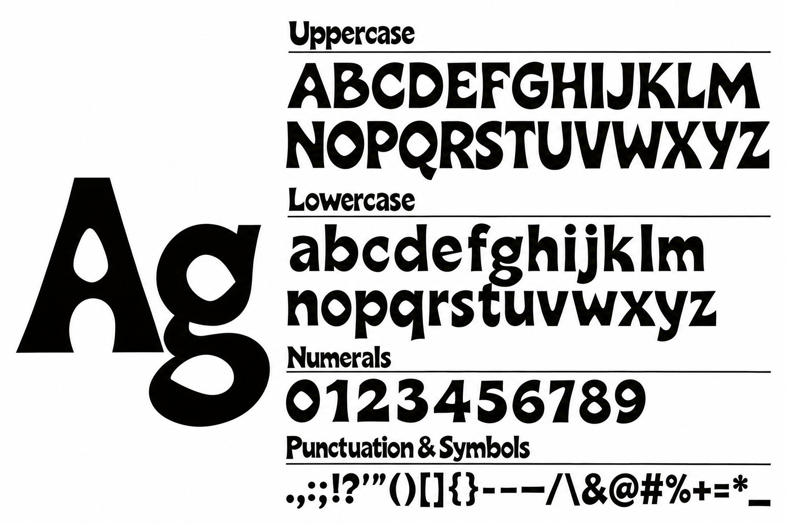
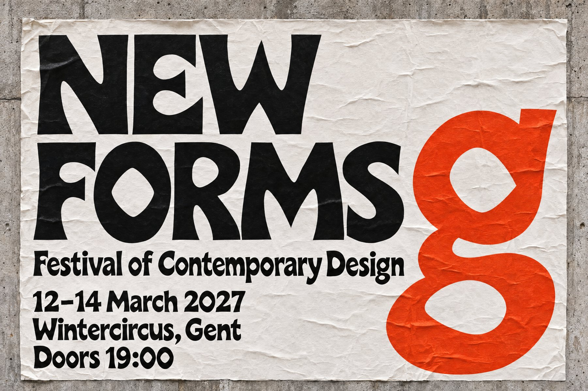

AI Consultancy · november 2026
Welk beeldmodel begrijpt typografie?
We lieten vier nieuwe beeldmodellen een lettertype ontwerpen. Eén model springt eruit.

Kan een beeldmodel een lettertype ontwerpen? We legden vier recente modellen exact dezelfde opdracht voor: GPT Image 2.6 Flare en Sunburst van OpenAI, Muse Image van Meta en Nano Banana 2.1 van Google.
Hoe we testten
Een professionele typograaf schreef de masterprompt: zo'n 30.000 tekens over constructie, ritme, optische correcties en spatiëring. Elk model kreeg die tekst ongewijzigd, met dezelfde briefing.
Daarna volgden drie stappen. Eerst een zin, alleen op basis van tekst. Die zin werd de referentie voor de volledige tekenset. De tekenset werd op zijn beurt de referentie voor een affiche. Eén poging per beeld, niets opnieuw gegenereerd, niets bijgewerkt. We deden dat in drie rondes en scherpten de prompt telkens aan.
Wat we zagen
Nano Banana 2.1 en Muse zijn duidelijk getraind op professionele typografie. Hun specimens lijken op wat een foundry publiceert: verzorgde proporties, rustige spatiëring, geloofwaardige cijfers.
OpenAI probeert creatief te zijn, maar begrijpt het niet. Flare en Sunburst kiezen voor opvallende vormen, zoals stencilsneden en uitlopende stammen, die eerder als effect werken dan als letterontwerp.
Geen enkel model gebruikt een referentie echt goed. Muse wisselde tussen zin en tekenset van een schreefloze naar een klassieke serif. Andere modellen vervingen rechte aanhalingstekens door gekrulde of voegden tekst toe waar niemand om vroeg. Echte creativiteit vonden we nergens: de letters zijn verzorgd, maar zelden verrassend.
Conclusie
Nano Banana 2.1 is de beste. Niet het meest gewaagde model, wel het meest professionele en betrouwbare. Wil je een lettertype verkennen, een richting testen of een specimen visualiseren, dan begin je daar.
Een type designer vervangt het niet. Een model levert een beeld van letters, geen bruikbaar font. Benieuwd wat AI voor jouw merkidentiteit kan doen? Een eerste intake is gratis.






